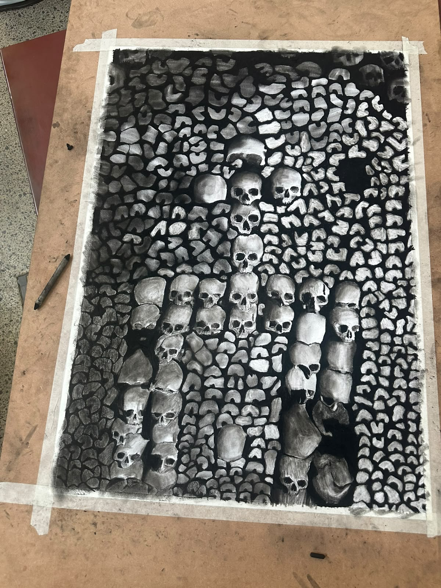

Meegaande skets
Frantz Claassen (my kleinseun)
As ek die legkaart van my voorsate probeer bou,
dan moet ek vroeg begin
by hulle, van wie ons die name nie kan onthou —
terug tot by ons oermoeder, nagespoor deur mitochondriale DNA;
om dan te besef, sy het eens geleef, hier op bodem van Afrika
en van hier het haar nageslag vertak — soos ’n wildevy versprei.
Oer-ouma Eva, ek huldig jou menswees in my.
Dao De Jing, 52 — Laozi
Die wêreld het ’n begin;
dit kan as die Moeder van wêreld beskou word.
Wanneer jy die Moeder ken, ken jy haar kinders.
Wanneer jy haar kinders ken,
keer terug en hou vas aan die Moeder.